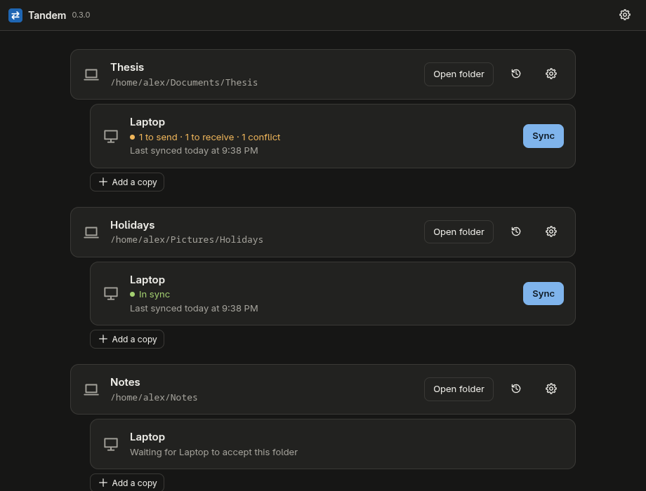
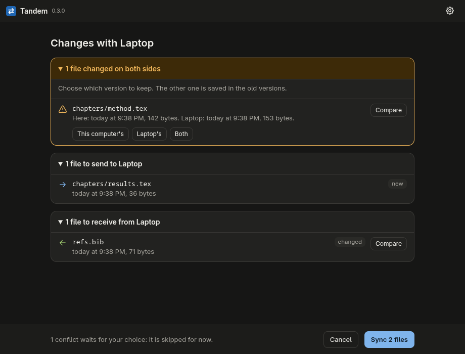
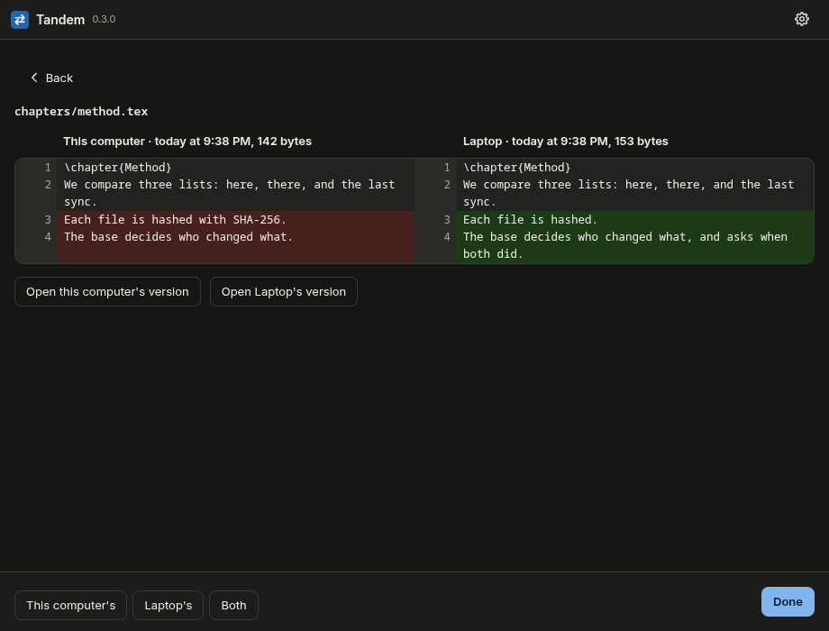
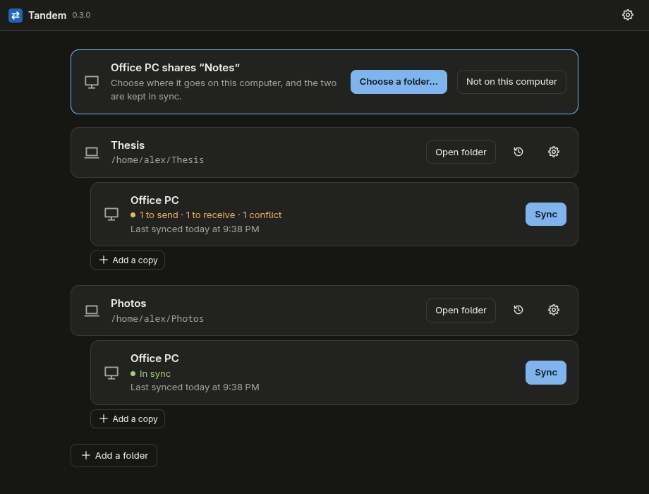
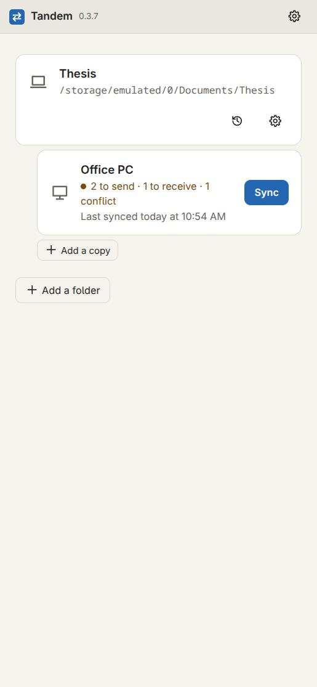
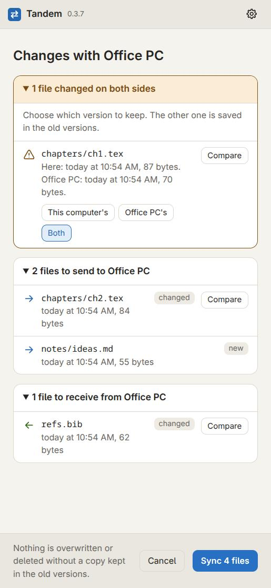
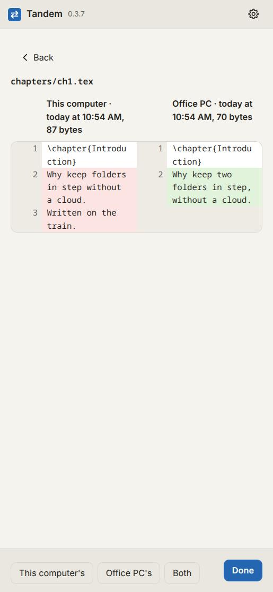

The same folder,
on every device.
Tandem keeps a folder the same on your computers and your phone, over your own network. Nothing goes to the cloud, and nothing changes before you have seen it.
See every change first
A sync starts with a list of what it will do: files to send, to receive, deleted on the other side, and files changed on both sides, each with three answers: yours, theirs, or both.
Nothing is lost
No file is overwritten or deleted without a copy kept. Old versions stay 90 days, in the folder itself, and can be put back.
No cloud, no account
Files go straight from one device to the other, encrypted, over your own Wi-Fi. Devices pair once, with a code or by scanning a QR code.
Download
Install Tandem on every device that keeps a copy of the folder. All versions sync with each other.
All systems
The Windows and macOS versions are newer and have been tried less than the Linux and Android ones. Coming to F-Droid.
How it works
- Choose the folder on each device. On the second one, an empty folder is fine.
- Pair the devices once: one shows a code, the other types it, or scans its QR code from the phone. Both must be on the same network, with Tandem open.
- Sync: Tandem compares the two copies and lists what it will do, conflicts first. Text files can be compared side by side before you choose.
- Between syncs, the home screen says what a sync would do with each copy ("2 to send · 1 to receive"), or why it can't tell. It never says "in sync" without seeing both sides.
On a computer








On a phone






Screenshots show sample files.
What it doesn't do (yet)
- It doesn't sync in the background: you start each sync and see it. On the phone it works while the app is open.
- It doesn't merge two versions of a file into one: "keep both" puts them side by side.
- Empty folders, links and file permissions are not synced.
- On the phone, files can't be opened in other apps yet.